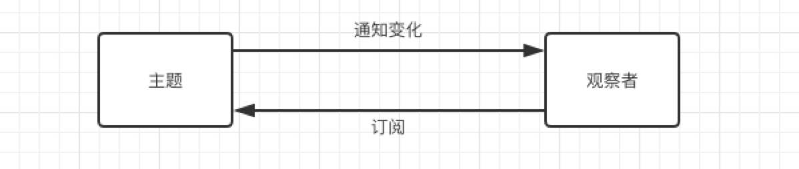
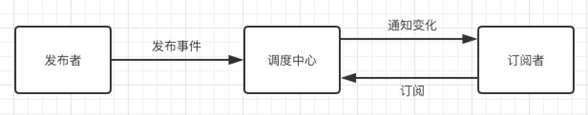

看到过许多关于观察者模式的介绍，大都是大篇理论性的概念开始，看的云里雾里的，直到看到这道题：1
2
3
4
5
6
7
8
9
10
11
12
13
14
15
16
17
18
19
20
21
22
23
24
25
26
27
28
29
30
31
32
33
34
35
36
37
38请实现下面的自定义事件 Event 对象的接口，功能见注释(测试1)
该 Event 对象的接口需要能被其他对象拓展复用(测试2)
// 测试1
Event.on('test', function (result) {
console.log(result);
});
Event.on('test', function () {
console.log('test');
});
Event.emit('test', 'hello world'); // 输出 'hello world' 和 'test'
// 测试2
var person1 = {};
var person2 = {};
Object.assign(person1, Event);
Object.assign(person2, Event);
person1.on('call1', function () {
console.log('person1');
});
person2.on('call2', function () {
console.log('person2');
});
person1.emit('call1'); // 输出 'person1'
person1.emit('call2'); // 没有输出
person2.emit('call1'); // 没有输出
person2.emit('call2'); // 输出 'person2'
var Event = {
// 通过on接口监听事件eventName
// 如果事件eventName被触发，则执行callback回调函数
on: function (eventName, callback) {
//你的代码
},
// 触发事件 eventName
emit: function (eventName) {
//你的代码
}
};
首先看测试1，需要实现一个 Event 对象，用 on 方法注册了两个 test 属性的事件，当 emit 触发事件时，触发 test 属性对应的回调。on 方法也就是注册事件，需要传两个参数，第一个是事件类型，第二个是该事件的回调，当调用 emit 方法的时候，触发对应属性的回调。总结来说，主要就是实现两点：注册事件和触发事件。这就是典型的观察者模式啊！
通过上面分析，要写的代码就是：1
2
3
4
5
6
7
8
9
10
11
12
13
14
15
16
17
18
19
20
21
22var Event = {
subs: {},
on: function(eventName, callback) {
if(!this.subs) {
this.subs = {};
}
if(!this.subs[eventName]) {
this.subs[eventName] = [];
}
this.subs[eventName].push(callback);
},
emit: function(eventName) {
var arg = arguments[1];
if(!eventName) {
return
}
this.subs[eventName] && this.subs[eventName].forEach(function(item){
item(arg);
})
}
}
以上面的例子简单理解一下观察者模式：
观察者模式
观察者模式也叫发布-订阅模式（当然这两个有区别，后续说区别），定义了对象的一对多的依赖关系，当一个对象的状态发生改变时，所有依赖它的对象都得到通知。由 Subject（主体）和 Observe（观察者）组成，Subject 负责发布事件，Observe 通过订阅事件来观察 Subject，一旦 Subject 发布更新，Observe 会得到通知。DOM 事件就是典型的观察者模式，元素注册事件，当触发事件时调用注册的回调。1
2
3el.addEventListener('click',function(e){
console.log(e);
}, false)
观察者模式 VS 发布-订阅者模式
观察者模式
观察者模式中，观察者直接订阅目标事件，目标改变时，调用观察者的通知方法，是一种紧耦合的状态。

实现方式：1
2
3
4
5
6
7
8
9
10
11
12
13
14
15
16
17
18
19
20
21
22
23
24
25
26
27
28class Subject {
constructor() {
this.subs = [];
}
subscribe(sub) {
this.subs.push(sub);
}
update() {
this.subs.forEach(sub=>{
sub.notify();
})
}
}
class Observer {
constructor(data) {
this.data = data;
}
notify() {
console.log(this.data)
}
}
let subject = new Subject();
let obj1 = new Observer('hello');
let obj2 = new Observer('world');
subject.subscribe(obj1);
subject.subscribe(obj2); // obj1 和 obj2 订阅了 subject
subject.update(); // subject 更新通知所有的 观察者 obj1 和 ob2，调用 notify 方法
发布-订阅模式
发布-订阅模式是广义的观察者模式，发布-订阅模式会抽离出一个调度中心(Event Bus)，负责对订阅者的管理，使得发布者和订阅者解耦，便于扩展。

Vue 非父子组件通信方式 Event Bus 就是这种模式。通过 Event Bus 管理事件。1
2
3
4
5
6
7
8// 全局注册事件中心
var bus = new Vue();
// 在组件 A 中注册监听事件
bus.$on('id-selected', function(){});
// 在组件 B 触发事件
bus.$emit('id-selected','');
实现方式：
1 | class EventBus { |
接着回到题目看测试2：1
2
3
4
5
6
7
8
9
10
11
12
13
14
15// 测试2
var person1 = {};
var person2 = {};
Object.assign(person1, Event);
Object.assign(person2, Event);
person1.on('call1', function () {
console.log('person1');
});
person2.on('call2', function () {
console.log('person2');
});
person1.emit('call1'); // 输出 'person1'
person1.emit('call2'); // 没有输出
person2.emit('call1'); // 没有输出
person2.emit('call2'); // 输出 'person2'
为两个 person 注册独立的事件，如果按之前的代码，测试输出：1
2
3
4person1
person2
person1
person2
也就是，两个 person 并没有互相独立，person1 注册的方法 person2 也会有。因为有个 Object.assign() 方法，Object.assign(target, source)用于将源对象（source）的所有可枚举的属性，复制到目标对象（target）中，这个方法只是第一层属性的拷贝，如果属性的值是个对象，那值就是对象的引用，所以两个 person 里的 subs 是同一个引用。
解决方法最简单的是实现深度克隆，但题目已经固定了方式，所以必须将 subs 设置为不可枚举的属性。这样在每个 person 调用的时候都产生新的 subs。
1 | var Event = { |